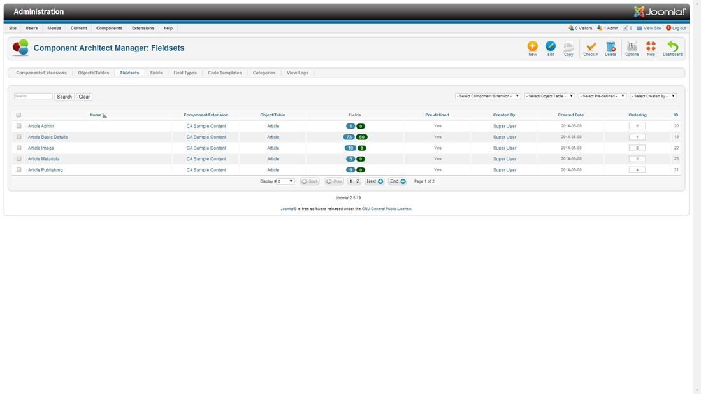
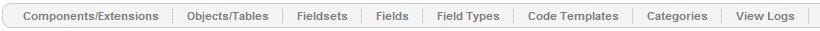
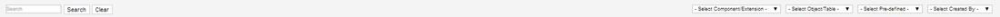
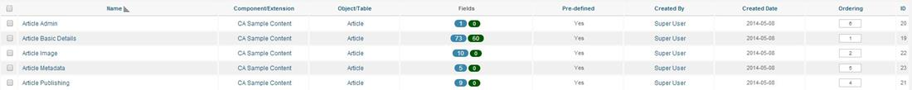
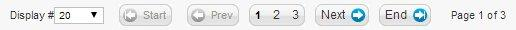

Fieldsets Manager Help
This view provides a list of the Fieldsets which the user can page through, filter and search. If authorised the user may also add, update, delete and reorder the Fieldsets.
You can use the following links to jump to a section of this help page:
Screenshot

New
Edit
Edit a selected Fieldset record. Only one Fieldset record must be selected. To see the help screen for Edit click on
Fieldset Edit Help
Copy
Create copies of the selected Fieldset records. The copied records will be renamed automatically by adding a numeric suffix.
Check in
Check in all selected Fieldset records.
Delete
Delete all selected Fieldset records.
Options
Help
Link to display the Help system.
Dashboard
Show the Component Architect dashboard which has links to all the main functionality and component update options. To see the help screen for the Dashboard click on
Component Architect Dashboard Help
Component Architect Links

Links
The following links are provided to the Managers within Component Architect
- Components/Extensions
- Objects/Tables
- Fieldsets
- Fields
- Field Types
- Code Templates
- Categories
- View Logs
Filter Fields

Filter:
Enter text to search the list of Fieldsets.
Search
A button to submit the Filter search.
Clear
Button to clear all values form the search and to reset the Filter fields.
Select Component/Extension
A drop down list showing all Component/Extension values in the list. A value can be selected and the list will then be filtered and redisplayed.
Select Object/Table
A drop down list showing all Object/Table values in the list. A value can be selected and the list will then be filtered and redisplayed.
Select Pre-defined
A drop down list showing all Pre-defined values in the list. A value can be selected and the list will then be filtered and redisplayed.
Fieldsets List

Check All
Selecting this box will select all Fieldsets records on the page displayed.
Field Columns
The following fields are shown in the list for the Fieldsets. The column headings may be clicked to change the sort field and whether it is ascending or descending sort.
- Name
- Component/Extension
- Object/Table
- Fields - a count of and link to the child Fields plus a count of and link to the non-predefined child Fields
- Pre-defined
- Created By
- Created Date
- Ordering - enter values
- Id
Ordering Column
The Ordering column is a special column in that if clicked on a Save icon appears in the column heading and the values in the list can be amended. To amend the order either use the up/down buttons or enter a value.
Page Controls
When the number of items is more than one page, you will see a page control bar as shown below. The current page number being viewed is shaded.

- Display #: Drop down list to select the number of records to be displayed on each page.
- Start: Click to go to the first page.
- Prev: Click to go to the previous page.
- Page numbers: Click to go to the desired page.
- Next: Click to go to the next page.
- End: Click to go to the last page.